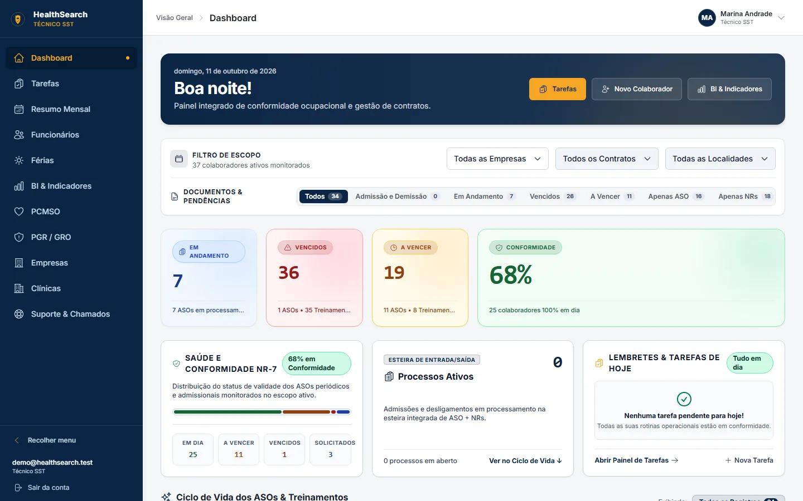

HealthSearch
Central de SST que sustenta o SIGAC · desenvolvida pela NOXXDThe OHS hub behind SIGAC · built by NOXXD
Nenhum ASO vence sem aviso.No medical exam expires unnoticed.
Saúde e Segurança do Trabalho em uma única central: ciclo completo do ASO, matriz de treinamentos das NRs, fechamento mensal de folha e absenteísmo, com dados clínicos criptografados no próprio navegador.Occupational health and safety in a single hub: the full medical-exam (ASO) cycle, the regulatory training matrix, monthly payroll closing and absenteeism, with clinical data encrypted right in the browser.
Matriz de treinamentosTraining matrixNR-01 — NR-35
Demonstração: 30 normas em dia; NR-06, NR-12 e NR-33 a vencer; NR-18 e NR-35 vencidas.Demo: 30 standards up to date; NR-06, NR-12 and NR-33 due soon; NR-18 and NR-35 expired.
Janela preventiva de 30 dias antes do vencimento normativo.A 30-day preventive window before the regulatory deadline.
VencidoExpired
ASO expirado: inconformidade imediata com a NR-07, sinalizada no painel.Expired exam: immediate NR-07 non-compliance, flagged on the dashboard.
O ciclo do ASO, de ponta a ponta (NR-07)The full medical-exam cycle (NR-07)
Cada colaborador tem um estado claro em todas as telas: ficha, exames complementares e painel analítico falam a mesma língua de cores.Every employee has a clear state on every screen: profile, complementary exams and analytics share the same color language.
SolicitadoRequestedGuia de encaminhamento gerada no sistema.Referral form generated in the system.
AgendadoScheduledConsulta marcada em clínica credenciada.Appointment booked at an accredited clinic.
PendentePendingAguardando exame complementar ou laudo.Awaiting a complementary exam or report.
Em DiaUp to DateAptidão regularizada.Fitness confirmed.
Ficha do colaboradorEmployee profile · ASO, exames complementares e treinamentos com o mesmo semáforo.Exams, complementary tests and training under the same traffic light.
35
normas regulamentadoras na matriz de treinamentosregulatory standards in the training matrix
30 d
de janela preventiva antes de um ASO vencerpreventive window before an exam expires
6
estados no ciclo do ASO, do pedido ao vencimentostates in the exam cycle, from request to expiry
0
taxa de egress no armazenamento (Cloudflare R2)storage egress fees (Cloudflare R2)
O alerta chega antes do vencimentoThe alert arrives before the deadline
Exames, treinamentos e guias mudam de estado e aparecem para a equipe de SST na hora, com a cor do semáforo.Exams, training and referrals change state and reach the OHS team right away, in traffic-light colour.
Dados fictíciosDemo data
ASO periódico · Igor BatistaVence em 12 dias · Metalúrgica Vale AzulDue in 12 days · Metalúrgica Vale Azul
Guia de encaminhamento · Luana FreitasSolicitada para exame complementarRequested for a complementary exam
Uma central para toda a operação de SSTOne hub for the whole OHS operation
/dashboard

Painel em bento gridBento-grid dashboard · KPIs com entrada escalonada, ações prioritárias e vencimentos.Staggered KPIs, priority actions and upcoming expirations.
Gestão do ASOMedical exam management
Ciclo de vida completo do ASO, exames complementares e ficha do colaborador, com folhas A4 normativas geradas no cliente via jsPDF.The full exam lifecycle, complementary exams and employee profile, with regulatory A4 sheets rendered client-side with jsPDF.
Matriz de treinamentosTraining matrix
Treinamentos da NR-01 à NR-35 organizados em uma matriz por colaborador.Training from NR-01 to NR-35 organized in a per-employee matrix.
Folha e absenteísmoPayroll and absenteeism
Fechamento mensal de folha e acompanhamento de absenteísmo, com indicadores visuais em Recharts.Monthly payroll closing and absenteeism tracking, with visual indicators in Recharts.
Busca global HealthSearchHealthSearch global search
Colaboradores, exames e clínicas em uma janela acionada por Ctrl + K, de qualquer tela.Employees, exams and clinics in one window opened with Ctrl + K, from any screen.
Experimente a busca globalTry the global search
No sistema, Ctrl + K abre a busca de qualquer tela. Aqui ela também funciona: digite um nome, uma NR ou uma clínica.In the system, Ctrl + K opens search from any screen. It works here too: type a name, an NR or a clinic.
ASO periódico · Mateus RamosExame · vence em 12 diasExam · due in 12 days
NR-35 · Trabalho em alturaTreinamento · 4 vencidosTraining · 4 expired
Clínica Ocupacional VidaClínica credenciada · Vila SerenaAccredited clinic · Vila Serena
Nada encontrado nos dados de demonstração.Nothing found in the demo data.
Ctrl + KDados fictíciosDemo data
O CID-10 é cifrado antes de sair do navegadorICD-10 codes are encrypted before they leave the browser
Diagnósticos e dados sensíveis de saúde são criptografados no cliente com a Web Crypto API. O servidor guarda apenas o texto cifrado.Diagnoses and sensitive health data are encrypted client-side with the Web Crypto API. The server only ever stores ciphertext.
AES-GCM com chave de 256 bits e autenticação integradaAES-GCM with a 256-bit key and built-in authentication
Validação de entrada com Zod 4 em todos os formuláriosZod 4 input validation on every form
Rotas protegidas por perfil de acessoRole-protected routes
Campo no formulárioForm field
cid10: "M54.5"
AES-GCM · 256 bits
Gravado no bancoStored in the database
iv: "q3Z9rT0bWm1xYc2K"
ct: "8fJ2pL0vQe7nR4sT1wXk9uZb6yHc3mAd"
Valores ilustrativos.Illustrative values.
Arquitetura de custo zeroZero-cost architecture
Uma SPA client-centric que roda em infraestrutura serverless, sem servidor dedicado para manter e sem taxa de saída de dados.A client-centric SPA running on serverless infrastructure, with no dedicated server to maintain and no data-egress fees.
React 19+ Vite 8
Rotas com React Router 7, cache com TanStack Query e carregamento sob demanda com retry.React Router 7 routes, TanStack Query caching and lazy loading with retry.
Tailwind v4CSS-first @theme
Tokens de marca e semáforo SST declarados direto no CSS, sem config em JavaScript.Brand and OHS status tokens declared straight in CSS, no JavaScript config.
Firebaseserverless
Backend serverless: nenhum servidor próprio para provisionar ou corrigir.Serverless backend: no server of your own to provision or patch.
Cloudflare R2sem taxa de egressno egress fees
Arquivos e documentos armazenados sem pagar pelo download.Files and documents stored without paying for downloads.
Interface com zero emojis, ícones Heroicons e alto contraste estrito (anti-washout) em conformidade com WCAG AA.An interface with zero emojis, Heroicons iconography and strict anti-washout high contrast to WCAG AA.
Perguntas frequentesFrequently asked questions
Preciso manter um servidor?Do I need to run a server?
Não. A aplicação roda em infraestrutura serverless (Firebase) e guarda arquivos no Cloudflare R2, sem taxa de saída de dados.No. The app runs on serverless infrastructure (Firebase) and stores files on Cloudflare R2, with no egress fees.
Como a equipe sabe que um ASO vai vencer?How does the team know an exam is about to expire?
Pelo semáforo: 30 dias antes do vencimento o exame passa para "A Vencer" e aparece nos painéis e alertas.Through the traffic light: 30 days before the deadline the exam turns "Due Soon" and shows up on dashboards and alerts.
Quem pode ver e editar os dados?Who can see and edit the data?
As rotas são protegidas por perfil de acesso (assessor, SST, supervisor) e os formulários validam cada campo antes de salvar.Routes are protected by access profile (assistant, OHS, supervisor) and forms validate every field before saving.
Os documentos saem prontos para arquivar?Do documents come out ready to file?
Sim. As folhas A4 normativas são geradas no próprio navegador em PDF.Yes. Regulatory A4 sheets are generated as PDF right in the browser.
Sua SST em dia, todos os diasYour OHS up to date, every day
Converse com a NOXXD sobre implantar o HealthSearch ou construir uma central sob medida para a sua empresa.Talk to NOXXD about deploying HealthSearch or building a custom hub for your company.